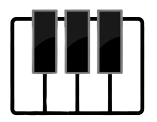
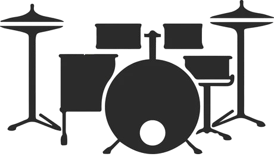
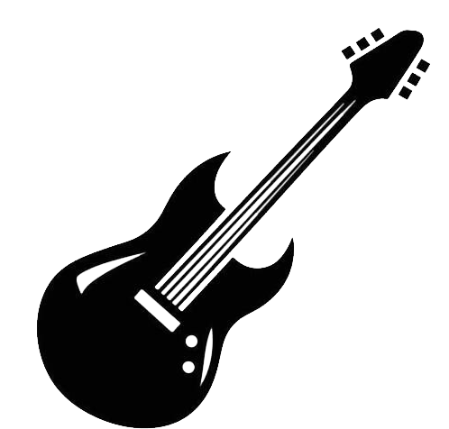

We are the Digital World team, a multidisciplinary group passionate about technology.

Piano
The piano, with its 24 keys, turns beats into captivating melodies. An instrument full of magic!
GO!

Batería
The drums, with their powerful rhythm, set the pulse of the music. Essential for rhythm and emotion!
GO!

Guitar
The guitar, with its vibrant strings, creates melodies that resonate in the heart. An instrument full of passion!
GO!